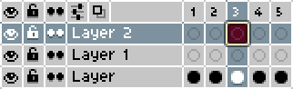

Программное обеспечение
 Aseprite
Aseprite
Можно купить в стиме, скачать с зелёного сайта или попросить у кого-то архив с программой.
Aseprite — это профессиональный редактор пиксель арта. Подавляющее большинство художников использует именно его. Огромный плюс aseptite по сравнению с другими редакторами — её простота и специализация именно на пиксель арте.
Основные инструменты
| Изображение | Инструмент | Горячая клавиша | Описание |
|---|---|---|---|
| Карандаш | B | Основной инструмент рисования. Рисует пиксель. В левом верхнем углу можно увеличить размер карандаша, а также поменять вид карандаша. | |
 |
Ластик | E | Удаляет отдельные пиксели. Также можно настраивать размер |
 |
Пипетка | I | Берёт цвет с холста |
 |
Заливка | G | Закрашивает область одного цвета |
 |
Выделение | M | Выделяет часть спрайта для перемещения, копирования или трансформации |
 |
Палочка | W | Выделяет область с похожим цветом |
| Линия | L | Рисует линию. Если зажать Shift - линии будут более прямыми. |
Вкладка "Edit":
- –ó–∞–º–µ–Ω–∏—Ç–µ–ª—å цвета (
Shift+R) — меняет один цвет (ЛКМ) на другой (ПКМ) по всему изображению или в выделении. - Горизонтальное отзеркаливание (
Shift+H) — отражает изображение или выделение слева направо. - Вертикальное отзеркаливание (
Shift+V) — отражает изображение или выделение сверху вниз. - Вставить текст (
T) — добавляет пиксельный текст прямо на холст - Контур (
Shift+O) — автоматически создаёт обводку вокруг выбранной области.
Вкладки "Sprite":
- Режим цвета — позволяет переключаться между RGB, индексированным и градациями серого.
- Размер спрайта — меняет размер всего изображения. Можно заблокировать соотношения, чтобы они оставались одинаковыми.
- Размер холста — увеличивает или уменьшает холст, не растягивая изображение.
- Вращение холста — позволяет поворачивать холст на 180 градусов и на 90 по и против часовой стрелки.
- Обрезка — урезает холст под размер спрайта.
Слои и анимация
В Aseprite анимация и работа со слоями тесно связаны.
Чтобы открыть окно анимации (таймлайн) — нажмите Tab.
Слои работают как прозрачные плёнки, наложенные друг на друга. Их можно включать, выключать, перемещать и блокировать.
Shift + N— создать новый слой (layer).Alt + N— создать новый кадр.Ctrl + Shift + N— новая группа слоёв.

- Глаз — при нажатии скрывает слой.
- Замок — при закрытом замке слой закрепляется на месте. Нельзя выполнить никакие действия с слоем.
- Кадры — одиночные и связанные кадры. Одиночные идут друг за другом, связанные - зацикливание кадра.
Скрипты
Aseprite поддерживает Lua-скрипты. Скрипты можно найти во вкладке «Файл». Для добавления скриптов файл со скриптом с расширением lua нужно переместить в нужную папку. Её можно найти, нажав Open Scripts Folder (Aseprite ▶ File ▶ Scripts ▶ Open Scripts Folder).
Полезные скрипты:
- –†—É—Å–∏—Ñ–∏–∫–∞—Ç–æ—Ä ‚Äî нет –∂–µ смысла –æ–±—ä—è—Å–Ω—è—Ç—å, —á—Ç–æ –æ–Ω –¥–µ–ª–∞–µ—Ç?üôÇ
- More Color Shading Options — создаёт палитру из выбранного цвета: с изменением трёх ползунков и с изменением каждого из них по отдельности. Не стоит полностью на него полагаться, однако он может стать полезным инструментом.

Другие скрипты вы можете искать в специальном сайте.
Resprite
Если вам кажется, что в вашей жизни не хватает страданий, и вы решили порисовать на мобильном устройстве, то resripte – это то, что вам нужно. Это бесплатный аналог aseprite для смартфонов.
Программа копирует инструменты и особенности aseprite, поэтому нет смысла описывать их снова.